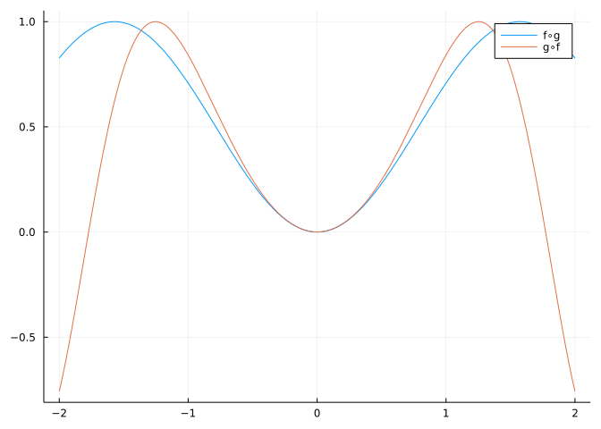
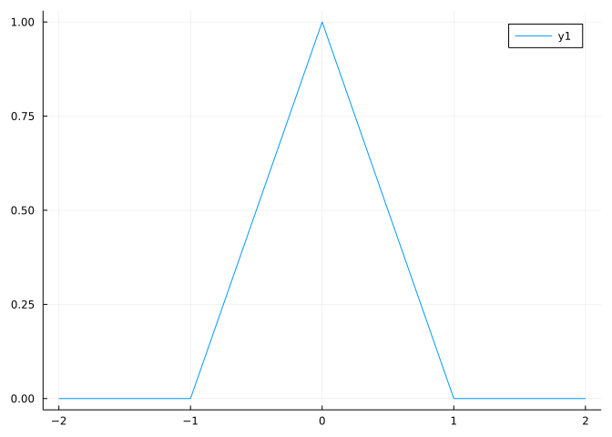
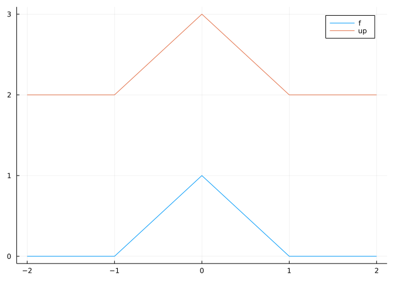
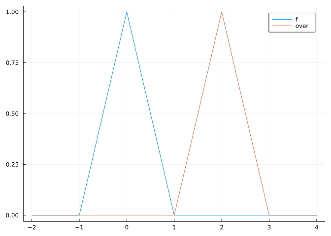
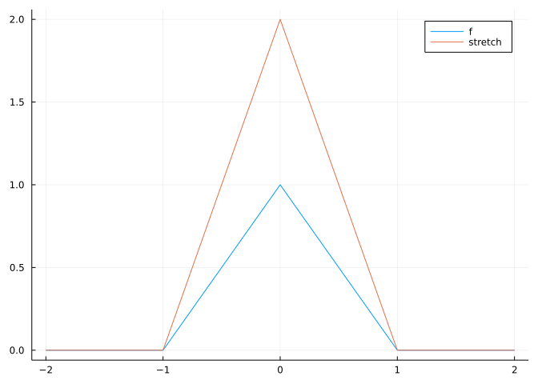
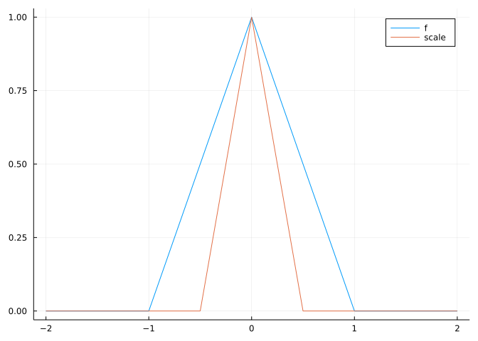
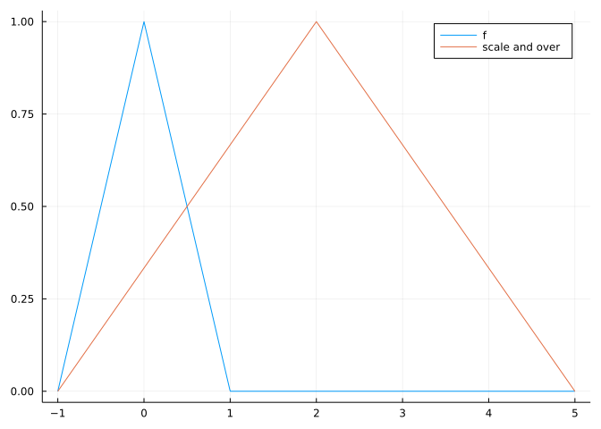
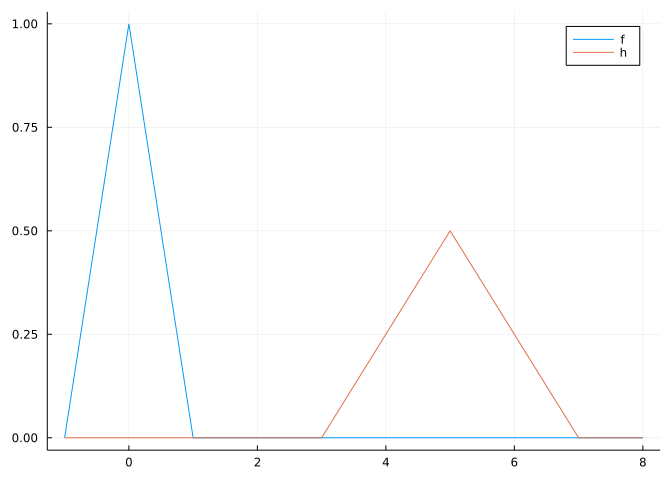
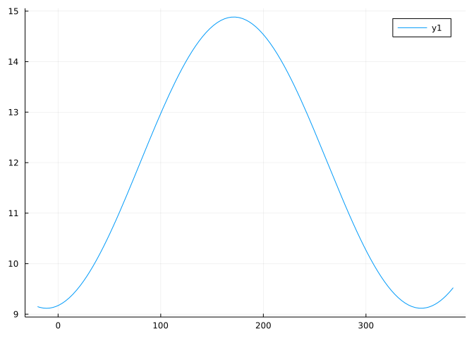
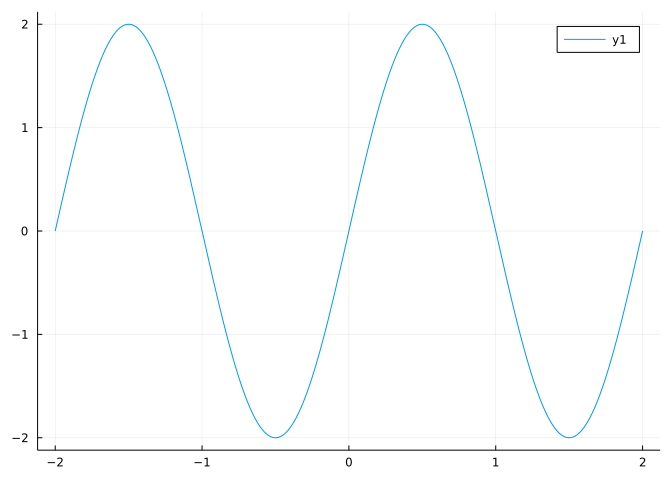

import Base: +
f::Function + g::Function = x -> f(x) + g(x)+ (generic function with 314 methods)In this section we will use these add-on packages:
using CalculusWithJulia
using PlotsThinking of functions as objects themselves that can be manipulated - rather than just blackboxes for evaluation - is a major abstraction of calculus. The main operations to come: the limit of a function, the derivative of a function, and the integral of a function all operate on functions. Hence the idea of an operator. Here we discuss manipulations of functions from pre-calculus that have proven to be useful abstractions.
We can talk about the algebra of functions. For example, the sum of functions \(f\) and \(g\) would be a function whose value at \(x\) was just \(f(x) + g(x)\). More formally, we would have:
\[ (f + g)(x) = f(x) + g(x), \]
We have given meaning to a new function \(f+g\) by defining what is does to \(x\) with the rule on the right hand side. Similarly, we can define operations for subtraction, multiplication, addition, and powers.
These mathematical concepts aren’t defined for functions in base Julia, though they could be if desired, by a commands such as:
import Base: +
f::Function + g::Function = x -> f(x) + g(x)+ (generic function with 314 methods)This adds a method to the generic + function for functions. The type annotations ::Function ensure this applies only to functions. To see that it would work, we could do odd-looking things like:
ss = sin + sqrt
ss(4)1.2431975046920718Doing this works, as Julia treats functions as first class objects, lending itself to higher order programming. However, this definition in general is kind of limiting, as functions in mathematics and Julia can be much more varied than just the univariate functions we have defined addition for. We won’t pursue this further.
As seen, just like with numbers, it can make sense mathematically to define addition, subtraction, multiplication and division of functions. Unlike numbers though, we can also define a new operation on functions called composition that involves chaining the output of one function to the input of another. Composition is a common practice in life, where the result of some act is fed into another process. For example, making a pie from scratch involves first making a crust, then composing this with a filling. A better abstraction might be how we “surf” the web. The output of one search leads us to another search whose output then is a composition.
Mathematically, a composition of univariate functions \(f\) and \(g\) is written \(f \circ g\) and defined by what it does to a value in the domain of \(g\) by:
\[ (f \circ g)(x) = f(g(x)). \]
The output of \(g\) becomes the input of \(f\).
Composition depends on the order of things. There is no guarantee that \(f \circ g\) should be the same as \(g \circ f\). (Putting on socks then shoes is quite different from putting on shoes then socks.) Mathematically, we can see this quite clearly with the functions \(f(x) = x^2\) and \(g(x) = \sin(x)\). Algebraically we have:
\[ (f \circ g)(x) = \sin(x)^2, \quad (g \circ f)(x) = \sin(x^2). \]
Though they may be typographically similar don’t be fooled, the following graph shows that the two functions aren’t even close except for \(x\) near \(0\) (for example, one composition is always non-negative, whereas the other is not):
f(x) = x^2
g(x) = sin(x)
fg = f ∘ g # typed as f \circ[tab] g
gf = g ∘ f # typed as g \circ[tab] f
plot(fg, -2, 2, label="f∘g")
plot!(gf, label="g∘f")
Unlike how the basic arithmetic operations are treated, Julia defines the infix Unicode operator \\circ[tab] to represent composition of functions, mirroring mathematical notation. This infix operations takes in two functions and returns an anonymous function. It can be useful and will mirror standard mathematical usage up to issues with precedence rules.
Starting with two functions and composing them requires nothing more than a solid grasp of knowing the rules of function evaluation. If \(f(x)\) is defined by some rule involving \(x\), then \(f(g(x))\) just replaces each \(x\) in the rule with a \(g(x)\).
So if \(f(x) = x^2 + 2x - 1\) and \(g(x) = e^x - x\) then \(f \circ g\) would be (before any simplification)
\[ (f \circ g)(x) = (e^x - x)^2 + 2(e^x - x) - 1. \]
If can be helpful to think of the argument to \(f\) as a “box” that gets filled in by \(g\):
\[ \begin{align*} g(x) &=e^x - x\\ f(\square) &= (\square)^2 + 2(\square) - 1\\ f(g(x)) &= (g(x))^2 + 2(g(x)) - 1 = (e^x - x)^2 + 2(e^x - x) - 1. \end{align*} \]
Here we look at a few compositions:
Decomposing a function into a composition of functions is not unique, other compositions could have been given above. For example, the last function is also \(f(x) = e^{-x/2}\) composed with \(g(x) = x^2\).
The real value of composition is to break down more complicated things into a sequence of easier steps. This is good mathematics, but also good practice more generally. For example, when we approach a problem with the computer, we generally use a smallish set of functions and piece them together (that is, compose them) to find a solution.
It is very useful to mentally categorize functions within families. The difference between \(f(x) = \cos(x)\) and \(g(x) = 12\cos(2(x - \pi/4))\) is not that much - both are cosine functions, one is just a simple enough transformation of the other. As such, we expect bounded, oscillatory behaviour with the details of how large and how fast the oscillations are to depend on the specifics of the function. Similarly, both these functions \(f(x) = 2^x\) and \(g(x)=e^x\) behave like exponential growth, the difference being only in the rate of growth. There are families of functions that are qualitatively similar, but quantitatively different, linked together by a few basic transformations.
There is a set of operations of functions, which does not really change the type of function. Rather, it basically moves and stretches how the functions are graphed. We discuss these four main transformations of \(f\):
| Transformation | Description |
|---|---|
vertical shifts | The function \(h(x) = k + f(x)\) will have the same graph as \(f\) shifted up by \(k\) units. |
horizontal shifts | The function \(h(x) = f(x - k)\) will have the same graph as \(f\) shifted right by \(k\) units. |
stretching | The function \(h(x) = kf(x)\) will have the same graph as \(f\) stretched by a factor of \(k\) in the \(y\) direction. |
scaling | The function \(h(x) = f(kx)\) will have the same graph as \(f\) compressed horizontally by a factor of \(1\) over \(k\). |
The functions \(h\) are derived from \(f\) in a predictable way. To implement these transformations within Julia, we define operators (functions which transform one function into another). As these return functions, the function bodies are anonymous functions. The basic definitions are similar, save for the x -> ... part that signals the creation of an anonymous function to return:
up(f, k) = x -> f(x) + k
over(f, k) = x -> f(x - k)
stretch(f, k) = x -> k * f(x)
scale(f, k) = x -> f(k * x)scale (generic function with 1 method)To illustrate, let’s define a hat-shaped function as follows:
𝒇(x) = max(0, 1 - abs(x))𝒇 (generic function with 1 method)A plot over the interval \([-2,2]\) is shown here:
plot(𝒇, -2,2)
The same graph of \(f\) and its image shifted up by \(2\) units would be given by:
plot(𝒇, -2, 2, label="f")
plot!(up(𝒇, 2), label="up")
A graph of \(f\) and its shift over by \(2\) units would be given by:
plot(𝒇, -2, 4, label="f")
plot!(over(𝒇, 2), label="over")
A graph of \(f\) and it being stretched by \(2\) units would be given by:
plot(𝒇, -2, 2, label="f")
plot!(stretch(𝒇, 2), label="stretch")
Finally, a graph of \(f\) and it being scaled by \(2\) would be given by:
plot(𝒇, -2, 2, label="f")
plot!(scale(𝒇, 2), label="scale")
Scaling by \(2\) shrinks the non-zero domain, scaling by \(1/2\) would stretch it. If this is not intuitive, the definition x-> f(x/c) could have been used, which would have opposite behaviour for scaling.
More exciting is what happens if we combine these operations.
A shift right by \(2\) and up by \(1\) is achieved through
plot(𝒇, -2, 4, label="f")
plot!(up(over(𝒇,2), 1), label="over and up")
Shifting and scaling can be confusing. Here we graph scale(over(𝒇,2),1/3):
plot(𝒇, -1,9, label="f")
plot!(scale(over(𝒇,2), 1/3), label="over and scale")This graph is over by \(6\) with a width of \(3\) on each side of the center. Mathematically, we have \(h(x) = f((1/3)\cdot x - 2)\)
Compare this to the same operations in opposite order:
plot(𝒇, -1, 5, label="f")
plot!(over(scale(𝒇, 1/3), 2), label="scale and over")
This graph first scales the symmetric graph, stretching from \(-3\) to \(3\), then shifts over right by \(2\). The resulting function is \(f((1/3)\cdot (x-2))\).
As a last example, following up on the last example, a common transformation mathematically is
\[ h(x) = \frac{1}{a}f(\frac{x - b}{a}). \]
We can view this as a composition of “scale” by \(1/a\), then “over” by \(b\), and finally “stretch” by \(1/a\):
a = 2; b = 5
𝒉(x) = stretch(over(scale(𝒇, 1/a), b), 1/a)(x)
plot(𝒇, -1, 8, label="f")
plot!(𝒉, label="h")
(This transformation keeps the same amount of area in the triangles, can you tell from the graph?)
A model for the length of a day in New York City must take into account periodic seasonal effects. A simple model might be a sine curve. However, there would need to be many modifications: Obvious ones would be that the period would need to be about \(365\) days, the oscillation around \(12\) and the amplitude of the oscillations no more than \(12\).
We can be more precise. According to dateandtime.info in \(2015\) the longest day will be June \(21\)st when there will be \(15\)h \(5\)m \(46\)s of sunlight, the shortest day will be December \(21\)st when there will be \(9\)h \(15\)m \(19\)s of sunlight. On January \(1\), there will be \(9\)h \(19\)m \(44\)s of sunlight.
A model for a transformed sine curve is
\[ a + b\sin(d(x - c)) \]
Where \(b\) is related to the amplitude, \(c\) the shift and the period is \(T=2\pi/d\). We can find some of these easily from the above:
a = 12
b = ((15 + 5/60 + 46/60/60) - (9 + 19/60 + 44/60/60)) / 2
d = 2pi/3650.01721420632103996If we let January \(1\) be \(x=0\) then the first day of spring, March \(21\), is day \(80\) (Date(2017, 3, 21) - Date(2017, 1, 1) + 1). This day aligns with the shift of the sine curve. This shift is \(80\):
c = 8080Putting this together, we have our graph is “scaled” by \(d\), “over” by \(c\), “stretched” by \(b\) and “up” by \(a\). Here we plot it over slightly more than one year so that we can see that the shortest day of light is in late December (\(x \approx -10\) or \(x \approx 355\)).
newyork(t) = up(stretch(over(scale(sin, d), c), b), a)(t)
plot(newyork, -20, 385)
To test, if we match up with the model powering dateandtime.info we note that it predicts “\(15\)h \(0\)m \(4\)s” on July \(4\), \(2015\). This is day \(185\) (Date(2015, 7, 4) - Date(2015, 1, 1) + 1). Our model prediction has a difference of
datetime = 15 + 0/60 + 4/60/60
delta = (newyork(185) - datetime) * 60-11.874016679895263This is off by a fair amount - almost \(12\) minutes. Clearly a trigonometric model, based on the assumption of circular motion of the earth around the sun, is not accurate enough for precise work, but it does help one understand how summer days are longer than winter days and how the length of a day changes fastest at the spring and fall equinoxes.
The von Bertalanffy growth equation is \(L(t) =L_\infty \cdot (1 - e^{k\cdot(t-t_0)})\). This family of functions can be viewed as a transformation of the exponential function \(f(t)=e^t\). Part is a scaling and shifting (the \(e^{k \cdot (t - t_0)}\)) along with some shifting and stretching. The various parameters have physical importance which can be measured: \(L_\infty\) is a carrying capacity for the species or organism, and \(k\) is a rate of growth. These parameters may be estimated from data by finding the “closest” curve to a given data set.
In the last example, we described our sequence as scale, over, stretch, and up, but code this in reverse order, as the composition \(f \circ g\) is done from right to left. A more convenient notation would be to have syntax that allows the composition of \(g\) then \(f\) to be written \(x \rightarrow g \rightarrow f\). Julia provides the pipeline operator for chaining function calls together.
For example, if \(g(x) = \sqrt{x}\) and \(f(x) =\sin(x)\) we could call \(f(g(x))\) through:
g(x) = sqrt(x)
f(x) = sin(x)
pi/2 |> g |> f0.9500244274657834The output of the preceding expression is passed as the input to the next. This notation is especially convenient when the enclosing function is not the main focus. (Some programming languages have more developed fluent interfaces for chaining function calls. Julia has more powerful chaining macros provided in packages, such as DataPipes.jl or Chain.jl.)
The functions up, over, etc. are operators that take a function as an argument and return a function. The use of operators fits in with the template action(f, args...). The action is what we are doing, such as plot, over, and others to come. The function f here is just an object that we are performing the action on. For example, a plot takes a function and renders a graph using the additional arguments to select the domain to view, etc.
Creating operators that return functions involves the use of anonymous functions, using these operators is relatively straightforward. Two basic patterns are
l(x) = action1(f, args...)(x)
l(10)action2( action1(f, args..), other_args...)Composition like the above is convenient, but can get confusing if more than one composition is involved.
(See Krill for background on this example.) Consider two operations on functions. The first takes the difference between adjacent points. We call this D:
D(f::Function) = k -> f(k) - f(k-1)D (generic function with 1 method)To see that it works, we take a typical function
𝐟(k) = 1 + k^2𝐟 (generic function with 1 method)and check:
D(𝐟)(3), 𝐟(3) - 𝐟(3-1)(5, 5)That the two are the same value is no coincidence. (Again, pause for a second to make sure you understand why D(f)(3) makes sense. If this is unclear, you could name the function D(f) and then call this with a value of 3.)
Now we want a function to cumulatively sum the values \(S(f)(k) = f(1) + f(2) + \cdots + f(k-1) + f(k)\), as a function of \(k\). Adding up \(k\) terms is easy to do with a generator and the function sum:
S(f) = k -> sum(f(i) for i in 1:k)S (generic function with 1 method)To check if this works as expected, compare these two values:
S(𝐟)(4), 𝐟(1) + 𝐟(2) + 𝐟(3) + 𝐟(4)(34, 34)So one function adds, the other subtracts. Addition and subtraction are somehow inverse to each other so should “cancel” out. This holds for these two operations as well, in the following sense: subtracting after adding leaves the function alone:
k = 10 # some arbitrary value k >= 1
D(S(𝐟))(k), 𝐟(k)(101, 101)Any positive integer value of k will give the same answer (up to overflow). This says the difference of the accumulation process is just the last value to accumulate.
Adding after subtracting also leaves the function alone, save for a vestige of \(f(0)\). For example, k=15:
S(D(𝐟))(15), 𝐟(15) - 𝐟(0)(225, 225)That is the accumulation of differences is just the difference of the end values.
These two operations are discrete versions of the two main operations of calculus - the derivative and the integral. This relationship will be known as the “fundamental theorem of calculus.”
If \(f(x) = 1/x\) and \(g(x) = x-2\), what is \(g(f(x))\)?
If \(f(x) = e^{-x}\) and \(g(x) = x^2\) and \(h(x) = x-3\), what is \(f \circ g \circ h\)?
If \(h(x) = (f \circ g)(x) = \sin^2(x)\) which is a possibility for \(f\) and \(g\):
Which function would have the same graph as the sine curve shifted over by 4 and up by 6?
Let \(h(x) = 4x^2\) and \(f(x) = x^2\). Which is not true:
The transformation \(h(x) = (1/a) \cdot f((x-b)/a)\) can be viewed in one sequence:
This is the graph of a transformed sine curve.

What is the period of the graph?
What is the amplitude of the graph?
What is the form of the function graphed?
Consider this expression
\[ \left(f(1) - f(0)\right) + \left(f(2) - f(1)\right) + \cdots + \left(f(n) - f(n-1)\right) = -f(0) + f(1) - f(1) + f(2) - f(2) + \cdots + f(n-1) - f(n-1) + f(n) = f(n) - f(0). \]
Referring to the definitions of D and S in the example on operators, which relationship does this support:
Consider this expression:
\[ \left(f(1) + f(2) + \cdots + f(n-1) + f(n)\right) - \left(f(1) + f(2) + \cdots + f(n-1)\right) = f(n). \]
Referring to the definitions of D and S in the example on operators, which relationship does this support: